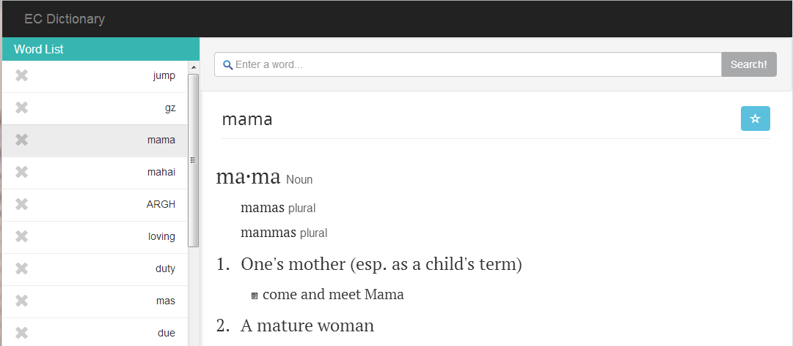

Welcome to my Project Pages
EC Dictionary
English Chinese Dictionary, minimalist two ways dictionary with responsive design.
NOTES: EC Dictionary are still work in progress! To enhance the responsiveness on every possible devices
Authors and Contributors
You can @mention a GitHub username to generate a link to their profile. The resulting <a> element will link to the contributor's GitHub Profile. For example: In 2007, Chris Wanstrath (@defunkt), PJ Hyett (@pjhyett), and Tom Preston-Werner (@mojombo) founded GitHub.
Support or Contact
Having trouble with Pages? Check out the documentation at http://help.github.com/pages or contact support@github.com and we’ll help you sort it out.